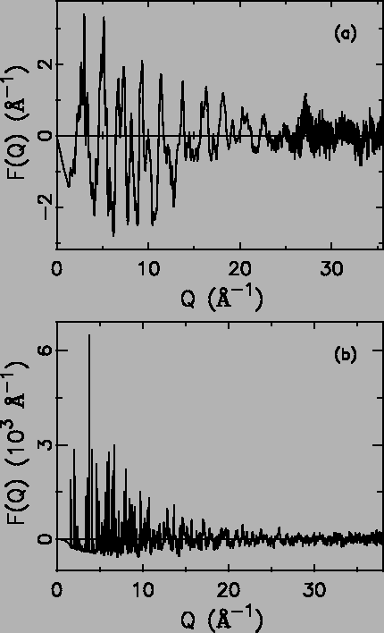
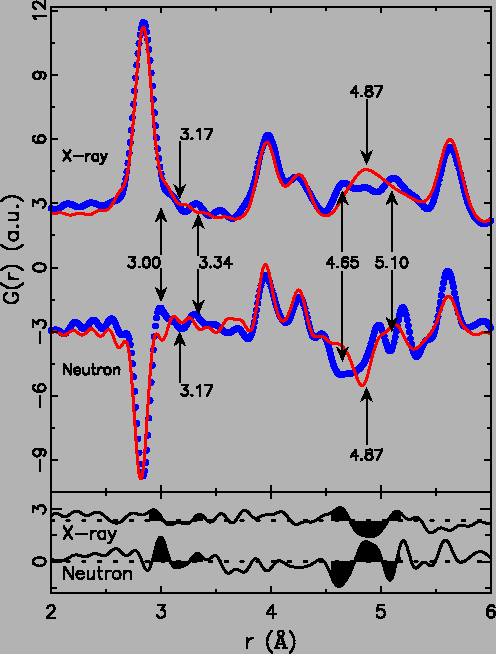
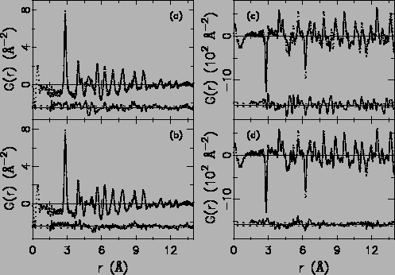

The distorted model with split Ti2 sites ultimately yields different
inter-atomic distances, in particular involving Ti-Ti bonds
(Table 5.1), but also Ti-Sb distances in the
second coordination sphere. Experimental proof for the presence of the
bonds/distances stemming from the split of Ti2 sites was directly
obtained utilizing the real-space pair distribution function (PDF)
technique [5]. The PDF, G(r), gives the probability
of finding pairs of atoms separated by distance r, and thereby
comprises peaks corresponding to all discrete inter-atomic
distances. The experimental PDF is a direct Fourier transform of the
total scattering structure function S(Q), the corrected, normalized
intensity, from powder scattering data given by
G(r) = 
 Q[S(Q) - 1]sin QrdQ, where Q is
the magnitude of the scattering vector. Unlike crystallographic
techniques, the PDF incorporates both Bragg and diffuse scattering
intensities resulting in local structural
information [5]. Its high real-space resolution is
ensured by measurement of scattering intensities over an extended Q
range (35.0 Å-1) using short wavelength X-rays or neutrons.
Q[S(Q) - 1]sin QrdQ, where Q is
the magnitude of the scattering vector. Unlike crystallographic
techniques, the PDF incorporates both Bragg and diffuse scattering
intensities resulting in local structural
information [5]. Its high real-space resolution is
ensured by measurement of scattering intensities over an extended Q
range (35.0 Å-1) using short wavelength X-rays or neutrons.
Both X-ray and neutron powder diffraction experiments were carried out. These give complementary data-sets due to the different relative scattering lengths of Ti and Sb to X-rays and neutrons: fTi(0)/fSb(0) = 0.43 for X-rays whereas for neutrons bTi(0)/bSb(0) = - 0.61. Thus, the scattering from Ti, and therefore the PDF peaks originating from Ti correlations, are somewhat more apparent in the neutron data. The X-ray experiment was performed at the 6-ID beam line at the Advanced Photon Source (APS) at Argonne National Laboratory. A powdered Ti2Sb sample of disk shape (thickness of 1.0 mm, diameter of 1.0 cm) was loaded into a hollow flat metal plate, and then sealed between thin kapton films. Data acquisition at 300 K employed the recently developed rapid acquisition PDF (RA-PDF) technique [61] with the X-ray energy of 98.0 keV. A single exposure of the image plate detector was limited to 2 seconds to avoid detector saturation, and was repeated 20 times to achieve better counting statistics in the high-Q region.
|
 |
The data-PDFs were examined to search for direct evidence of the short and long Ti2-Ti2 distances implicit in the distorted model. A large thermal factor with no underlying splitting results in broad peaks in the PDF centered on the average position whereas a split position results in peaks in the PDF splitting into two components that retain their sharpness. Thus, the distorted and undistorted models should be directly distinguishable in the PDF. The low-r region of the PDF is shown in Fig. 5.5 for X-rays (upper curve) and neutrons (lower curve). Features in the PDF can be compared to expected bond distances from Table 5.1. The strength of the PDF peak depends on the scattering power of the two atoms contributing to the peak, and the multiplicity of the pair. For both X-rays and neutrons Ti is a weaker scatterer than Sb and so the low multiplicity Ti-Ti bonds that would show the distortion directly are hard to see. In particular, the Ti1-Ti2 peak centered at 3.17 Å and the Ti2-Ti2 distance at 3.95 Å are barely evident. There is some suggestion from the neutron data that the 3.17 Å is split (apparent as a highlighted ``M''-shaped feature in both the x-ray and neutron difference curves), but by itself this is hardly convincing. However, the relatively strong Ti2-Sb peak centered at 4.87 Å gives a clear and unequivocal indication of this splitting. The peak from the undistorted model centered at this distance is absent in the data which, instead, has relatively sharp features at 4.65 Å and 5.10 Å. This results in a clear feature in the difference curves below the data in Fig. 5.5. In the X-ray data it is M-shaped and in the neutron data W-shaped; the difference due to the change in sign of the Ti-Sb peak in the PDF due to the negative neutron scattering length of Ti. These M/W features clearly show that the peak centered at 4.87 Å has split into a shorter and a longer peak.
|
 |
The data were then modeled quantitatively using a real-space profile fitting program, PDFFIT [11]. This program can refine the crystallographic model to the data, in analogy with Rietveld refinement. However, local structural distortions can be introduced into the models even when they are not long-range ordered and no crystallographic super-lattice reflections are observed as in the current case. We first fitted the data with the undistorted model, and show the results in Fig. 5.6 (a) (X-ray) and (b) (neutron).
|
 |